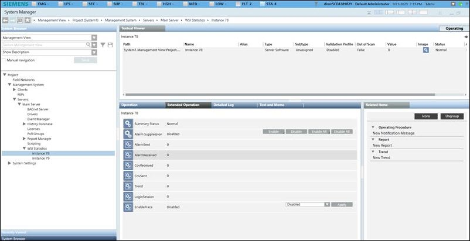

WSI Statistics
WSI (Web Service Interface) statistics provide insights into the traffic and load handled by WSI instances. The number of nodes displayed in WSI Statistics is the number of WSI instances in a project. Each WSI instance tracks its own metrics separately.
The WSI statistical data helps assess whether the system is functioning within defined operational limits or if any clients are contributing to excessive traffic. This helps the system to maintain stable and efficient performance.
You can view WSI statistical data via online trends. For more information, see Creating an Online Trend. To analyze and export WSI statistical data using trend calculation reports, system engineers must configure a trend calculation report.
WSI Instance Properties
When you click on a WSI instance under WSI Statistics, you can view the following properties in the Extended Operations tab.

Alarm Received: Total number of alarms WSI receives from the Desigo CC server.
Alarm Sent: Total number of alarms WSI processed and sent to the clients that are connected to WSI.
COV (Change of Value) Received: Total number of COVs WSI receives from the Desigo CC server.
COV Sent: Total number of COVs WSI processed and sent to the clients that are connected to WSI.
Trend Samples: Total number of trend samples WSI sent to the clients that are connected to WSI.